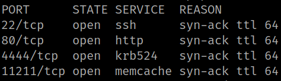
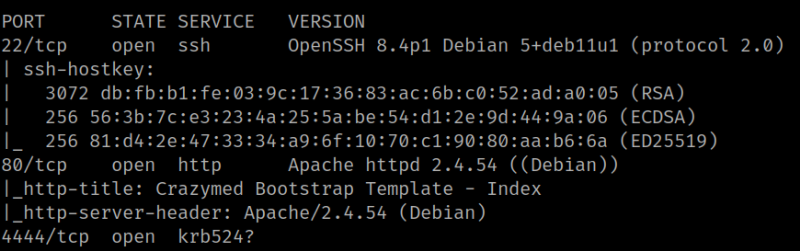
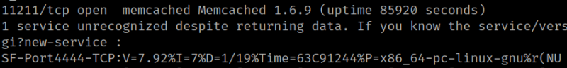

2. Finding Services and Ports
1. Run “nmap” to discover all open ports.
$ nmap -p- -sS --min-rate 5000 --open -Pn -vvv -n 192.168.12.75
Output:

There are several ports opened 22, 80, 4444 y 11211.
2. Look for more information.
$ nmap -sCV -p22,80,4444,11211 192.168.12.75
Output:

